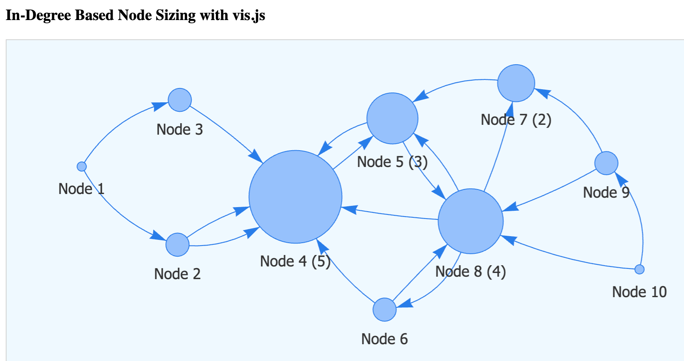

In-Degree Node Size

Run In-degree Node Size MicroSim
In-degree Node Size MicroSim V2
In-degree Node Size MicroSim V3
In-degree Node Size MicroSim V4
In-degree Node Size MicroSim Base
Prompt
Create a demonstration vis.js program that demonstrates
how the size of a node can be larger as the in-degree
of the vertex increases.
ChatGPT Response
Here's a demonstration program using vis.js where the node size dynamically increases with the in-degree of each vertex. In this example, each time a node receives an incoming edge, its size increases proportionally to the in-degree count.
1
2
3
4
5
6
7
8
9
10
11
12
13
14
15
16
17
18
19
20
21
22
23
24
25
26
27
28
29
30
31
32
33
34
35
36
37
38
39
40
41
42
43
44
45
46
47
48
49
50
51
52
53
54
55
56
57
58
59
60
61
62
63
64
65
66
67
68
69
70
71
72
73
74
75
76
77
78
79
80
81
82
83
84 | <!DOCTYPE html>
<html lang="en">
<head>
<meta charset="UTF-8">
<meta name="viewport" content="width=device-width, initial-scale=1.0">
<title>vis.js In-Degree Based Node Sizing</title>
<script type="text/javascript" src="https://unpkg.com/vis-network/standalone/umd/vis-network.min.js"></script>
<style>
#network {
width: 800px;
height: 600px;
border: 1px solid lightgray;
}
</style>
</head>
<body>
<h3>In-Degree Based Node Sizing with vis.js</h3>
<div id="network"></div>
<script type="text/javascript">
// Create an array with nodes
const nodes = new vis.DataSet([
{ id: 1, label: 'Node 1', value: 1 },
{ id: 2, label: 'Node 2', value: 1 },
{ id: 3, label: 'Node 3', value: 1 },
{ id: 4, label: 'Node 4', value: 1 },
{ id: 5, label: 'Node 5', value: 1 }
]);
// Create an array with edges
const edges = new vis.DataSet([
{ from: 1, to: 2 },
{ from: 1, to: 3 },
{ from: 2, to: 4 },
{ from: 3, to: 4 },
{ from: 4, to: 5 },
{ from: 5, to: 3 }
]);
// Calculate in-degrees and update node sizes
function updateNodeSizes() {
const inDegrees = {};
// Initialize in-degree count
nodes.forEach(node => inDegrees[node.id] = 0);
// Calculate in-degrees from edges
edges.forEach(edge => {
inDegrees[edge.to] = (inDegrees[edge.to] || 0) + 1;
});
// Update node sizes based on in-degree
nodes.forEach(node => {
const inDegree = inDegrees[node.id] || 0;
node.value = Math.max(5, 10 + inDegree * 5); // Base size + multiplier
nodes.update(node);
});
}
// Initialize the network
const container = document.getElementById('network');
const data = { nodes: nodes, edges: edges };
const options = {
nodes: {
shape: 'dot',
scaling: {
min: 5,
max: 50
},
font: { size: 16, face: 'Tahoma' },
},
edges: {
arrows: 'to'
},
physics: false
};
const network = new vis.Network(container, data, options);
// Update node sizes based on in-degree
updateNodeSizes();
</script>
</body>
</html>
|
Explanation:
- Nodes and Edges: A set of nodes and edges is created initially.
- In-Degree Calculation: A helper function
updateNodeSizes() calculates the in-degree of each node by counting incoming edges.
- Node Sizing Based on In-Degree: The node
value attribute is updated to reflect the in-degree, where each node's size increases by a certain amount per incoming edge.
- Rendering: The network is initialized with
vis.js, and nodes will appear larger for higher in-degrees.
This example provides a clear visual where nodes with higher in-degrees will appear larger in the network.
Resizing Boxes
1
2
3
4
5
6
7
8
9
10
11
12
13
14
15
16
17
18
19
20
21
22
23
24
25
26
27
28
29
30
31
32
33
34
35
36
37
38
39
40
41
42
43
44
45
46
47
48
49
50
51
52
53
54
55
56
57
58
59
60
61
62
63
64
65
66
67
68
69
70
71
72
73
74
75
76
77
78
79 | <!DOCTYPE html>
<html lang="en">
<head>
<meta charset="UTF-8">
<meta name="viewport" content="width=device-width, initial-scale=1.0">
<title>vis.js In-Degree Based Node Sizing with Box Shapes</title>
<script type="text/javascript" src="https://unpkg.com/vis-network@9.1.2/dist/vis-network.min.js"></script>
<style>
#network {
width: 800px;
height: 600px;
border: 1px solid lightgray;
}
</style>
</head>
<body>
<h3>In-Degree Based Node Sizing with Box Shapes in vis.js</h3>
<div id="network"></div>
<script type="text/javascript">
// Create an array with nodes
const nodes = new vis.DataSet([
{ id: 1, label: 'Node 1', shape: 'box' },
{ id: 2, label: 'Node 2', shape: 'box' },
{ id: 3, label: 'Node 3', shape: 'box' },
{ id: 4, label: 'Node 4', shape: 'box' },
{ id: 5, label: 'Node 5', shape: 'box' }
]);
// Create an array with edges
const edges = new vis.DataSet([
{ from: 1, to: 2 },
{ from: 1, to: 3 },
{ from: 2, to: 4 },
{ from: 3, to: 4 },
{ from: 4, to: 5 },
{ from: 5, to: 3 }
]);
// Calculate in-degrees and update node sizes
function updateNodeSizes() {
const inDegrees = {};
// Initialize in-degree count
nodes.forEach(node => inDegrees[node.id] = 0);
// Calculate in-degrees from edges
edges.forEach(edge => {
inDegrees[edge.to] = (inDegrees[edge.to] || 0) + 1;
});
// Update node sizes based on in-degree
nodes.forEach(node => {
const inDegree = inDegrees[node.id] || 0;
node.width = Math.max(50, 50 + inDegree * 10); // Base width + multiplier
node.height = Math.max(30, 30 + inDegree * 5); // Base height + multiplier
nodes.update(node);
});
}
// Initialize the network
const container = document.getElementById('network');
const data = { nodes: nodes, edges: edges };
const options = {
nodes: {
font: { size: 16, face: 'Tahoma' },
},
edges: {
arrows: 'to'
},
physics: false
};
const network = new vis.Network(container, data, options);
// Update node sizes based on in-degree
updateNodeSizes();
</script>
</body>
</html>
|
Resizing Boxes
Prompt
How can I get "box" elements to also change their size?
This only seems to work for "dot" nodes.
ChatGPT Response
In vis.js, resizing nodes based on the value property works by default for "dot" shapes, but not for other shapes like "box." To achieve this for "box" nodes, you'll need to explicitly set the width and height properties of each node rather than relying on the value property. Here's how you can modify the code to handle the resizing of "box" nodes:
Explanation of Changes
- Box Shape: Each node is set to the
shape: 'box'.
- Explicit Width and Height Adjustments: Instead of using the
value property, the width and height properties of each node are adjusted based on the in-degree count. This allows "box" nodes to resize according to the number of incoming edges.
- Custom Sizing Logic: For each node,
width and height are adjusted with base values (50 for width and 30 for height) and multipliers to make the size proportional to the in-degree.
This code dynamically adjusts the dimensions of "box" nodes based on their in-degrees, providing a similar visual impact as with "dot" nodes.
References
ChatGPT Dialog on In-Degree Node Sizing